Universal Bases: The Discrete Fourier Transform
Contents
13.4. Universal Bases: The Discrete Fourier Transform#
There are two fundamental types of bases for sets of vectors:
Universal bases can represent every vector in a vector space. For example, the rotated axis vectors used in the last section can represent every vector in \(\mathbb{R}^2\).
Set-specific bases can represent every vector in a specified set but generally cannot represent everything in the vector space.
Why do we not always use a universal basis?
Recall that the cardinality of a basis is the dimensionality of the set of vectors that it can represent. The dimensionality of the set of all real \(n\)-vectors (i.e., all vectors in \(\mathbb{R}^n\)) is \(n\), and so \(n\) basis vectors are required. However, if we have a subset of \(\mathbb{R}^n\) with cardinality \(M < n\), then the dimensionality of the subset is at most \(M\) and thus fewer than \(n\) basis vectors are required. If \(M\) is much smaller than \(n\), this can make a significant difference in computation.
In this section, we will consider a particular universal basis made out of sinusoids. This type of basis is often applied to data that is collected over time, called time-series data:
DEFINITION
- time-series data:#
Data that is collected over time, usually at regular intervals. Each data point is associated with a timestamp indicating when the data was collected.
When time-series data is represented using sinusoidal basis functions, then the representation characterizes the frequency content of the signal. This frequency representation is useful in many applications, including:
Audio: the frequency representation can be used to analyze or manipulate the frequency content of speech or music signals. For instance, the frequency representation can be used for equalization, pitch shifting, or noise removal.
Financial data: the frequency representation can be used to identify patterns in price changes of stocks or commodities.
Mechanical signals: time-series data from mechanical systems, such as an engine, turbine, or machine can be used to identify vibrations.
Biological data: time-series data, such as electrical signals from the brain or heart, can be analyzed to determine the frequency of activity in that system.
13.4.1. Sinusoidal Basis#
Let’s begin by generating a set of sinusoidal basis vectors. We can generate such a set as the rows of a special matrix called a DFT matrix. We will show how to generate a DFT matrix and interpret it using plots. Readers who want to understand the math behind DFT matrices can refer to the Wikipedia page: https://en.wikipedia.org/wiki/DFT_matrix
The DFT matrix for length-64 vectors is computed as follows:
import numpy as np
dft_len = 64
dft = 1/np.sqrt(dft_len) * np.fft.fft(np.eye(dft_len))
print(dft)
[[0.125 +0.j 0.125 +0.j 0.125 +0.j
... 0.125 +0.j 0.125 +0.j
0.125 +0.j ]
[0.125 +0.j 0.12439809-0.01225214j 0.12259816-0.02438629j
... 0.11961754+0.03628558j 0.12259816+0.02438629j
0.12439809+0.01225214j]
[0.125 +0.j 0.12259816-0.02438629j 0.11548494-0.04783543j
... 0.1039337 +0.06944628j 0.11548494+0.04783543j
0.12259816+0.02438629j]
...
[0.125 +0.j 0.11961754+0.03628558j 0.1039337 +0.06944628j
... 0.07929916-0.09662631j 0.1039337 -0.06944628j
0.11961754-0.03628558j]
[0.125 +0.j 0.12259816+0.02438629j 0.11548494+0.04783543j
... 0.1039337 -0.06944628j 0.11548494-0.04783543j
0.12259816-0.02438629j]
[0.125 +0.j 0.12439809+0.01225214j 0.12259816+0.02438629j
... 0.11961754-0.03628558j 0.12259816-0.02438629j
0.12439809-0.01225214j]]
The first thing to notice is that the entries in the DFT matrix are complex. We can interpret the complex entries of a given row as follows:
the real parts are samples of a cosine function at some frequency
the imaginary parts of are samples of a minus sine function at the same frequency. The frequencies increase with the row number for the first half of the rows, and then decrease during the second half of the rows.
We will plot some of the sinusoids present in the first half of the dft matrix:
import matplotlib.pyplot as plt
figs, axs=plt.subplot_mosaic([['real', 'real', 'imag', 'imag', 'BLANK']],
empty_sentinel = 'BLANK')
for row in [0,1,4]:
axs['real'].plot(np.real(dft[row]))
axs['imag'].plot(np.imag(dft[row]), label='row '+str(row))
axs['real'].set_title('Real part')
axs['imag'].set_title('Imaginary part')
axs['imag'].legend(bbox_to_anchor = (1.05,1),
loc='upper left', borderaxespad =0.4);
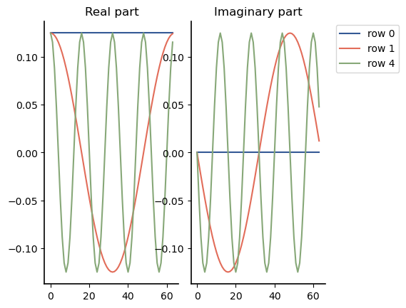
The magnitude-squared of each row is the sum of the squares of a sine and cosine wave, and result in a norm of 1 for every row:
np.linalg.norm(dft, axis=1)
array([1., 1., 1., 1., 1., 1., 1., 1., 1., 1., 1., 1., 1., 1., 1., 1., 1.,
1., 1., 1., 1., 1., 1., 1., 1., 1., 1., 1., 1., 1., 1., 1., 1., 1.,
1., 1., 1., 1., 1., 1., 1., 1., 1., 1., 1., 1., 1., 1., 1., 1., 1.,
1., 1., 1., 1., 1., 1., 1., 1., 1., 1., 1., 1., 1.])
In addition, the frequencies are such that all of the sinusoids at all of the frequencies are orthogonal, and this results in the complex vectors being orthogonal. For complex vectors \(\mathbf{a}\) and \(\mathbf{b}\), the inner product is defined as \(\mathbf{a} \cdot \mathbf{b}^*\), where the elements of \(\mathbf{b}^*\) are the complex conjugates of the elements in \(\mathbf{b}\). Then if we take any two rows, we will get an inner product of zero (subject to some small numerical error):
dft[0]@np.conj(dft[4]), dft[1]@np.conj(dft[4])
((-8.673617379884035e-19+8.673617379884035e-19j),
(2.3869698665066027e-18-1.6075252932294032e-18j))
Let’s start by analyzing the frequency content of a simple signal before using the DFT to analyze real data. We can generate a square wave signal using scipy.signal.square(). Below I generate a square wave with 4 cycles (I chose the parameters to get exactly 4 cycles, starting with half a cycle):
import scipy.signal
offset=4
t = np.linspace(0, 8*(64+offset)/64*np.pi, 64+offset)[offset:]
sq = scipy.signal.square(t)
plt.plot(sq);
plt.title('Length-64 square wave with 4 cycles')
Text(0.5, 1.0, 'Length-64 square wave with 4 cycles')
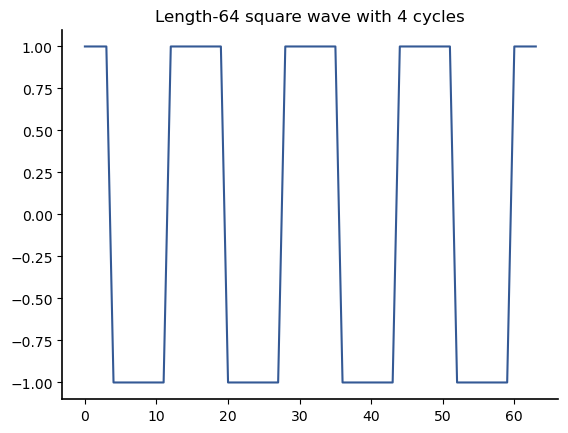
We can determine the frequency content of this wave by multiplying its vector representation by the rows of the DFT matrix. Let’s do a few frequency components individually before automating the process. Row 0 is a DC signal, so it determines any DC component in the signal:
dft[0]@sq
0j
Because we want to look at the scalar projection with many different rows, let’s make a function to print out the scalar projections given a list of rows. If the result is very small, let’s provide an option to suppress the output:
def print_projections(signal, dft_matrix, rows, suppression_threshold = 0):
''' print the scalar projection between the signal vector and the rows of the dft matrix
'''
for row in rows:
proj = np.conj(dft[row])@sq
if abs(proj) > suppression_threshold:
print(f'scalar projection of row {row}: {proj:.2f}')
Here are the values for rows 1 and 2:
print_projections(sq, dft, [1, 2])
scalar projection of row 1: 0.00+0.00j
scalar projection of row 2: 0.00+0.00j
Interestingly, all of these scalar projections are 0. This is because the waveform does not contain any of those low frequencies. Now lets consider the scalar projection with rows 3 and 4:
print_projections(sq, dft, [3, 4], suppression_threshold = 0.05)
scalar projection of row 4: 5.03-1.00j
Although the scalar projection with row 3 is zero, the scalar projection with row 4 is not. For real data, each row \(k\) in the DFT has a “partner” at 64-\(k\) such that if we take twice the real part of the scalar projection onto row \(k\), we get the combined effect of these two rows. The result is sinusoid that could be considered a very crude approximation of the square wave:
plt.plot(sq)
plt.plot(2*np.real(dft[4]@sq * dft[4]));
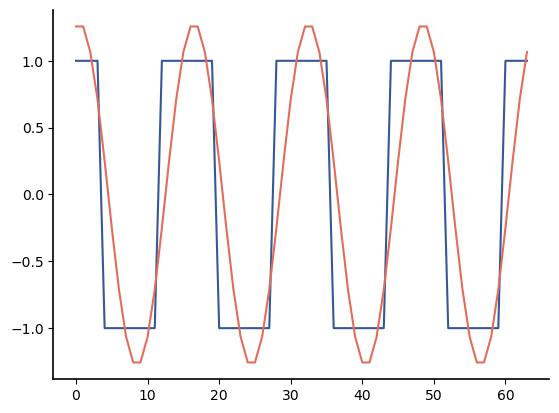
print_projections(sq, dft, range(5, 32), suppression_threshold=0.05)
scalar projection of row 12: -1.50+1.00j
scalar projection of row 20: 0.67-1.00j
scalar projection of row 28: -0.20+1.00j
Every 8th frequency component has a nonzero frequency component. The code below combines different numbers of projections. The approximation is plotted versus the original square wave after each new vector projection is added:
approximation = 2 * np.real(np.conj(dft[4])@sq * dft[4])
rows=[4]
for row in [12,20, 28]:
plt.figure()
approximation += 2 * np.real(np.conj(dft[row])@sq * dft[row])
plt.plot(sq)
plt.plot(approximation)
rows+=[row]
plt.title(f'Square wave and sum of vector projection on rows {rows}');
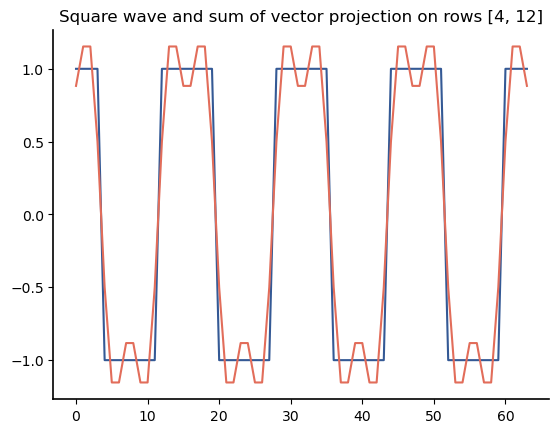
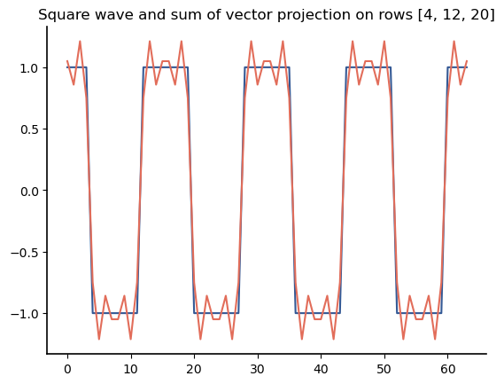
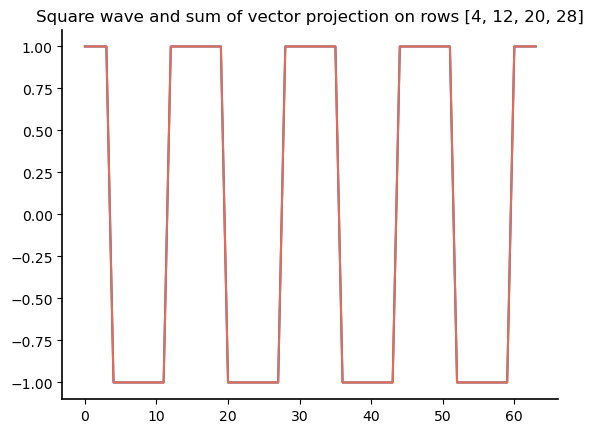
The original square wave is completely reconstructed from the sum of the vector projections, as we can verify by checking the norm of the error signal:
np.linalg.norm(sq-approximation)
2.945754565036118e-15
All of the scalar projections can be found using matrix multiplication, which we cover in Chapter 14 or can be found even more efficiently using a fast algorithm called the Fast Fourier Transform (FFT) when the length of the vector is a power of 2. We can get the DFT projections directly using NumPy using the np.fft.fft() function as follows:
1/np.sqrt(64)*np.fft.fft(sq)
array([ 0. +0.j, 0. +0.j, 0. +0.j, 0. +0.j,
5.02733949+1.j, 0. +0.j, 0. +0.j, 0. +0.j,
0. +0.j, 0. +0.j, 0. +0.j, 0. +0.j,
-1.49660576-1.j, 0. +0.j, 0. +0.j, 0. +0.j,
0. +0.j, 0. +0.j, 0. +0.j, 0. +0.j,
0.66817864+1.j, 0. +0.j, 0. +0.j, 0. +0.j,
0. +0.j, 0. +0.j, 0. +0.j, 0. +0.j,
-0.19891237-1.j, 0. +0.j, 0. +0.j, 0. +0.j,
0. +0.j, 0. +0.j, 0. +0.j, 0. +0.j,
-0.19891237+1.j, 0. +0.j, 0. +0.j, 0. +0.j,
0. +0.j, 0. +0.j, 0. +0.j, 0. +0.j,
0.66817864-1.j, 0. +0.j, 0. +0.j, 0. +0.j,
0. +0.j, 0. +0.j, 0. +0.j, 0. +0.j,
-1.49660576+1.j, 0. +0.j, 0. +0.j, 0. +0.j,
0. +0.j, 0. +0.j, 0. +0.j, 0. +0.j,
5.02733949-1.j, 0. +0.j, 0. +0.j, 0. +0.j])
In the following section, we show how to use this function to analyze the frequency content in a real biological signal.
13.4.2. Example: Analyzing Frequency Content of ECG Data#
An electrocardiogram (ECG) is a record of the electrical activity of the heart. The file ecg.csv contains the electrocardiogram (ECG or EKG) data for a healthy adult. ECGs often contain data for multiple channels, but this contains data only from a single lead (the I lead). Let’s start by loading this data and looking at the head of the dataframe:
import numpy as np
import pandas as pd
ecg_df = pd.read_csv('data/ecg.csv', header=None, skiprows=2)
ecg_df.rename(columns={0:'ecg'}, inplace=True)
ecg_df.head()
| ecg | |
|---|---|
| 0 | -41.920 |
| 1 | -44.644 |
| 2 | -47.030 |
| 3 | -49.050 |
| 4 | -50.681 |
This is supposed to be time-series data, but the time stamps are missing. However the first line of this file says: Sample Rate,512.242 hertz, which means that 512.242 samples were taken per second. Thus the time between samples (in seconds) is
1/512.242
0.0019522022793913817
We can assign a time to each ECG sample as follows:
ecg_df = ecg_df.assign(time = lambda x: x.index/512.242)
plt.plot(ecg_df['time'], ecg_df['ecg'])
plt.xlabel('time (s)')
plt.ylabel('ECG signal strength ($\mu V$)');
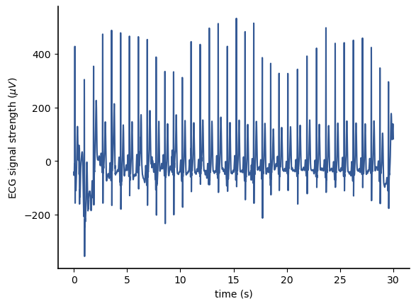
There is some variability that was probably caused by movement (these ECG results are from a smart watch). Let’s zoom in on a few cycles to get a better idea what the ECG data looks like:
s_min = 1370
s_max = 2665
plt.plot(ecg_df['time'].iloc[s_min:s_max], ecg_df['ecg'].iloc[s_min:s_max])
plt.xlabel('time (s)')
plt.ylabel('ECG signal strength ($\mu V$)');
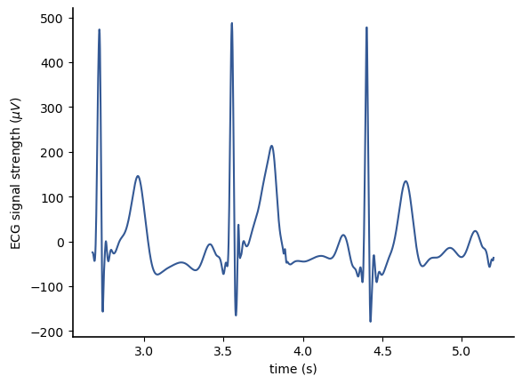
From this, we can clearly see the repeating structure of the ECG data. Each cycle of the ECG signal lasts approximately 0.8s (from a visual inspection), implying a heart rate in beats per minute of approximately
60/0.8
75.0
If we want to estimate the heart rate across this data frame, we have a couple of options. We could try to write a function to 1) find the peaks, 2) find the differences between adjacent peaks, and 3) average those differences. However, the time-varying nature of the peaks may make this challenging. As an alternative, we can transform the data into the frequency domain as follows:
ecg = ecg_df['ecg']
ECG = np.fft.fft(ecg)
Here, we have used capital letters to indicate that ECG is a frequency-domain representation of ecg. ECG is complex, but if we plot its magnitude-squared, the result is proportional to the power at each frequency. The power at each frequency is called the power spectral density:
DEFINITION
- power spectral density (of a vector)#
For a \(n\)-vector \(\mathbf{x}\) with DFT \(\mathbf{X}\), the power spectral density is the power at each frequency component and is given by
\[\begin{equation*} P[k] = \frac{1}{n} \| X[n]\|^2. \end{equation*}\]
Let’s start by plotting the power spectral density for the whole ECG vector:
plt.plot(abs(ECG)**2);
plt.title('Magnitude-squared of DFT of ECG data');
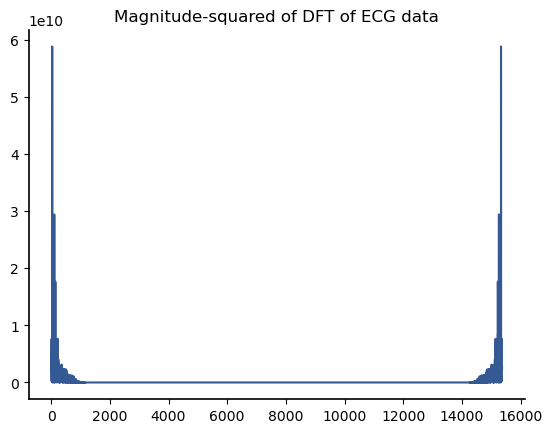
First, note the symmetry in the data. As before, only the first half of the DFT data is needed to capture all of the frequency information for a real vector.
Second, there are two problems that make this plot hard to use:
The plot is versus the row of the DFT matrix, not frequency.
The majority of the frequency information is concentrated in the lower DFT rows, and we can’t really see what is going on when plotting the full range.
To plot against frequency, we can use a helper function called np.fft.fftfreq() to return a vector of frequencies. It’s argument are the length of the DFT vectors and the time separation between samples. Since we have 512.242 sample/second, the time separation is the inverse of that value. We can create a vector of frequencies as follows:
f=np.fft.fftfreq(len(ecg), 1/512.242)
Then we can plot the first few hundred components of the DFT versus frequency as follows:
plt.plot(f[:400], 1/len(ECG)*np.abs(ECG[:400])**2)
plt.title('Power spectral density for ECG signal');
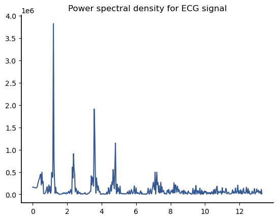
Let’s zoom in on the portion of the ECG signal that contains the frequency with the highest power:
plt.plot(f[:80], np.abs(ECG[:80])**2)
plt.title('Power spectral density for ECG signal');
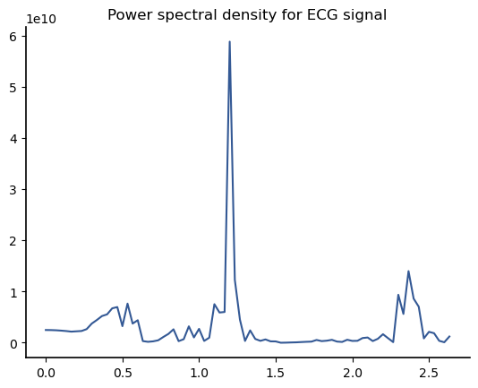
We can get the exact index of the peak using the argmax() method
peak_pos = (ECG[:400]**2).argmax()
peak_pos
36
and the corresponding frequency is
f[peak_pos]
1.2000203032472179
This frequency is in Hertz. This frequency corresponds to the heart rate during the ECG, which is approximately 1.2 beats/second. More commonly, we report heart rates in beats per minute, which in this case is
60*f[peak_pos]
72.00121819483307
When a signal is very impulsive like the beating of a heart, we often see harmonics in our signal at multiples of the base frequency. Thus, in the power spectral density, we see peaks not only at 1.2 Hz, but also at 2.4 Hz, 3.6 Hz, and 4.8 Hz. Those other peaks are not useful information. Although we will not pursue further analysis of the ECG signal in this book, some research articles do look at the power spectral density at the lower frequencies below the heart beat. Hopefully, this section has demonstrated the power of the DFT as a universal basis to transform a time domain signal into a frequency domain representation.